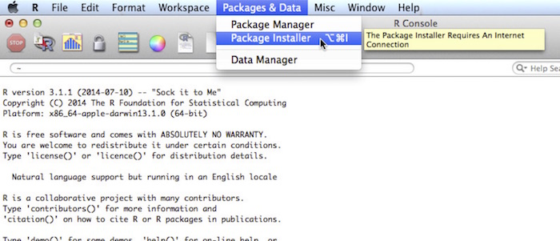
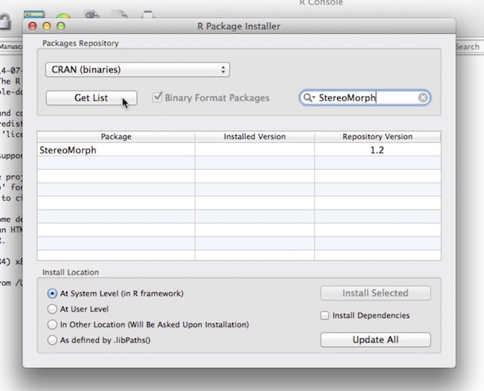
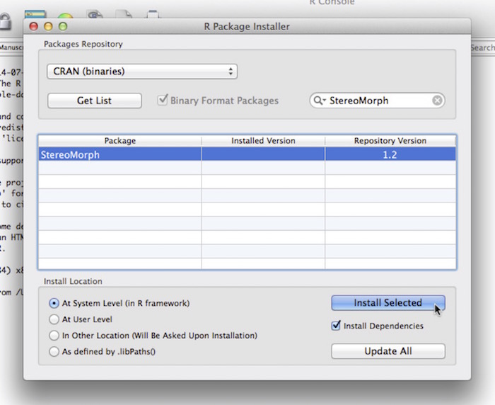

1.1 Installing StereoMorph
This section will show you how to install the R package StereoMorph. The R project is a computing language and platform that allows users to freely upload and share software packages.
1. If you do not already have R installed on your computer, begin by installing R. R can be installed on Windows, Linux and Mac OS X.
2. Once installed, open R.
3. Go to Packages & Data > Package Installer
4. Find the StereoMorph package binary by typing "StereoMorph" into the Package Search box and clicking Get List (the repository version of StereoMorph may be greater than the version in the image below).
5. Check the box next to Install Dependencies. This ensures that all the packages that StereoMorph requires to run will be installed as well. Then click Install Selected to install StereoMorph.
6. Throughout this tutorial I've included code that you can use to reproduce examples. Code is indicated in the courier font style on a gray background as in the example below, with comments indicated in orange and function names in blue. Code is in the R language, unless otherwise indicated.
# Print 'Hello world!' print('Hello world!')
To run each line of code, simply copy and paste the code into the R console.
7. Before calling any StereoMorph functions, load the StereoMorph package into the current R session using the library command.
# Load the StereoMorph package library(StereoMorph)